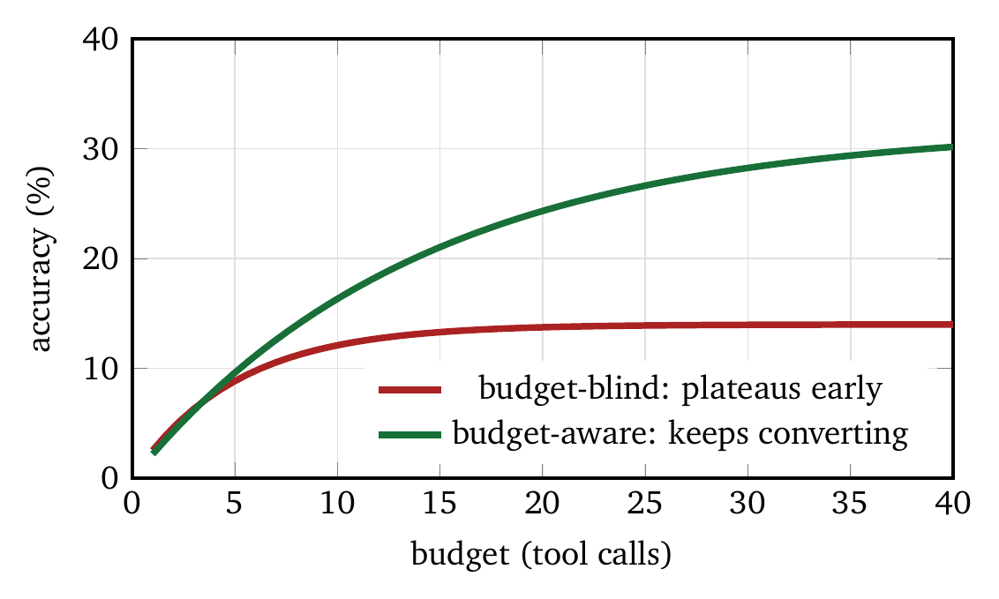
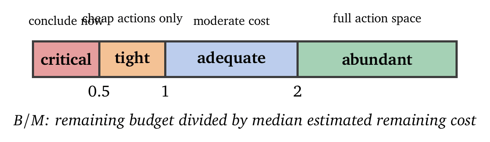
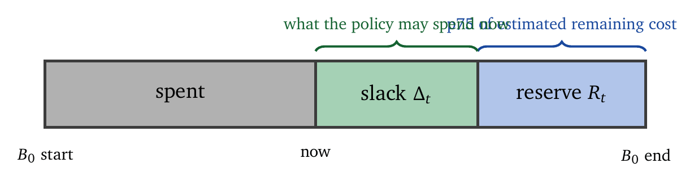

« Cost Models and Critical Paths | Contents | Action Selection Under Budgets »
Part I: FoundationsChapter 6. Budget-Aware Policies and Horizon Estimation
Give an agent twice the budget and it will usually get no further. Often it gets no further at all.
This is one of the more useful empirical findings of the past two years, and it deserves some attention, because it contradicts the natural assumption that resources are the binding constraint. A budget-unaware agent spends early on whatever looks locally promising, reaches a performance ceiling well before the budget is exhausted, and then spends the remainder on exploration that changes nothing. Doubling its allowance doubles the waste. Agents that can see their budget continue to convert additional resources into additional accuracy, and reach comparable accuracy on far less [3, 11]. Figure 6.1 shows the shape of the two curves.

Same models, same tools. The difference is that one of them carries the budget in its state.
Chapter 5 treated cost as something to analyze. This chapter treats it as something to control, which requires three things the previous chapter did not: a policy that conditions on the remaining budget, an estimate of how much work is left, and a rule for reserving against that estimate.
6.1 Budget-Aware Policies
A budget-blind agent selects actions on the basis of immediate relevance or predicted utility alone. It may invoke expensive tools repeatedly early in execution and discover only near the end that the remaining budget cannot finish the task, at which point no corrective action is possible.
A budget-aware agent tracks what is left, forms an expectation about what remains to be paid, and tightens its action selection as the difference shrinks. It explores early and shifts toward synthesis and verification on cheaper models as the budget thins.
The metric that improves is worth noting. Lower cost is the obvious benefit and the smaller one. The larger benefit is a higher completion rate, because the failure being fixed is arriving at the final synthesis step with nothing left to pay for it, rather than overspending as such.
6.1.1 Formal Framework
A budget-aware policy conditions on the remaining budget. The policy \(\pi(a \mid s, B)\) takes both the agent’s state \(s\) and the remaining budget \(B\). Let \(B_0\) be the initial budget and \(c(a)\) the cost of action \(a\). After actions \(a_1, \ldots, a_{t-1}\), the remaining budget is \[B_t = B_0 - \sum_{i=1}^{t-1} c(a_i),\] and the policy must satisfy the expected budget constraint \[\mathbb{E}_\pi\!\left[\sum_{t=1}^{T} c(a_t)\right] \leq B_0.\] The constraint couples decisions across time, which is what makes the problem hard. Spend aggressively now and later steps become infeasible. Hoard, and the agent returns a weak answer while holding budget it was meant to spend. Both are failures, and both have the same remedy: the policy has to price the option value of the remaining budget as well as the value of the next action.
6.1.2 Budget States and Thresholds
To make budget reasoning tractable, it is useful to discretize the remaining budget into a few coarse states. A representative scheme:
| Budget state | Remaining | Policy |
|---|---|---|
| Abundant | \(> 70\%\) | Full action space available |
| Adequate | \(40\%\)–\(70\%\) | Prefer moderate-cost actions |
| Tight | \(15\%\)–\(40\%\) | Restrict to low-cost actions |
| Critical | \(< 15\%\) | Minimal actions only |
These thresholds are task-dependent. For tasks with predictable step counts and uniform costs, evenly spaced thresholds suffice. Tasks with high variance in step cost require more conservative thresholds to avoid a late collapse.
A more principled calibration compares the remaining budget to the estimated remaining cost. Let \(M\) be the median estimate of the remaining cost. The ratio \(B/M\) is a normalized signal, and Figure 6.2 shows the four states in its terms: abundant when \(B/M > 2\), adequate when \(1 < B/M \leq 2\), tight when \(0.5 < B/M \leq 1\), and critical when \(B/M \leq 0.5\). This formulation adapts across tasks with different absolute cost scales, since “tight” means the same thing on a three-step lookup and a thirty-step investigation.

6.1.3 Action Space Filtering
Budget awareness is most effective when it is enforced before generation. Let \(\hat{c}(a)\) be the estimated cost of action \(a\) and \(\hat{R}\) the estimated remaining cost to complete the task. The affordable action set is \[\mathcal{A}_{\text{afford}}(B, \hat{R}) = \{ a \in \mathcal{A} : \hat{c}(a) \leq B - \hat{R} + \epsilon \},\] where \(B - \hat{R}\) is the available slack and \(\epsilon\) permits a limited overrun for unusually valuable actions.
The important word is before. Filter the action set before prompting the model rather than after it has proposed something. Post-hoc rejection has already paid for the generation, and it leaves the model to re-propose from the same distribution that produced the unaffordable action, so the agent pays repeatedly to be told no. Removing the option from the prompt costs nothing and cannot be argued with.
6.1.4 The Budget Tracker Module
The Budget Tracker [3] is a lightweight mechanism that injects explicit budget state into the model’s context at every step. A typical injection reads:
Budget Status:
- Initial budget: 20 tool calls
- Used: 7 tool calls
- Remaining: 13 tool calls (65%)
Budget Policy:
- Above 50%: Use tools freely for exploration
- 25-50%: Focus on high-value tool calls
- Below 25%: Reserve for essential verification
- Below 10%: Conclude with available evidenceDespite its simplicity, the intervention produces substantial improvements:
| Metric | ReAct | ReAct + Budget Tracker |
|---|---|---|
| Search calls | 100% | 59.6% (\(-\)40.4%) |
| Browse calls | 100% | 80.1% (\(-\)19.9%) |
| Total cost | 100% | 68.7% (\(-\)31.3%) |
| Accuracy | Baseline | Comparable |
The scaling behavior matters more than the savings. The baseline plateaus: past a point, extra budget produces no extra accuracy. With the tracker in place, accuracy keeps rising as the budget grows, which is the property that makes the budget a useful knob for an operator to turn. Related work on budget-aware tool use reports the same shape on agentic benchmarks, together with a finding worth underlining: much of the gain comes from knowing when to stop, rather than from any new capability [11].
6.1.5 Budget Reservation
A central problem is how much budget to reserve for future steps. A naive reservation multiplies the expected remaining steps \(T\) by the average per-step cost \(\bar{c}\), giving \(\text{Reserve} = T \cdot \bar{c}\). Because both quantities are uncertain, robust systems reserve a higher percentile of the remaining-cost distribution, such as the 75th. This reduces the chance of failure at the cost of occasional under-utilization. Figure 6.3 shows how the budget divides.

Adaptive reservation recomputes the estimate after each step:
def compute_available_budget(remaining_budget, expected_remaining):
p75_remaining = percentile_75(expected_remaining)
reserve = p75_remaining
available = remaining_budget - reserve
return max(available, min_action_cost)6.2 Horizon Estimation
Reservation depends on an estimate of how much work remains, and for open-ended tasks that estimate is difficult.
6.2.1 Estimation Approaches
Several signals contribute. Extrapolation from past spending assumes future steps resemble past steps, and fails when the phases of a task differ in cost. Task-type classification draws on historical distributions:
| Task type | Typical steps | Median cost |
|---|---|---|
| Simple factual | 2–4 | $0.05 |
| Research question | 5–10 | $0.25 |
| Complex coding | 10–30 | $0.80 |
| Multi-document synthesis | 8–15 | $0.45 |
Progress indicators exploit task-specific signals such as tests passed or sources collected. Model-based prediction asks the model to estimate the remaining work; when the model understands the task structure, its estimates are often informative. A combined estimate weights these signals, for instance 30% task-type prior, 40% progress indicators, and 30% model estimate.
6.2.2 Per-Step Cost Prediction
Different step types have distinct cost distributions:
| Step type | Median | P75 | P95 |
|---|---|---|---|
| Planning | $0.02 | $0.03 | $0.05 |
| Retrieval | $0.01 | $0.02 | $0.04 |
| Tool calls | $0.01 | $0.02 | $0.08 |
| Synthesis | $0.05 | $0.08 | $0.15 |
| Verification | $0.02 | $0.03 | $0.06 |
These distributions support probabilistic reservation rather than point estimates.
6.2.3 Bayesian Updating
As execution proceeds, the estimate should be revised. Nearest-neighbor matching against historical trajectories captures the correlation between what has been spent and what remains:
def update_cost_estimate(spent, steps_taken, historical_trajectories):
similar = [t for t in historical_trajectories
if abs(t.cost_at_step[steps_taken] - spent) < tolerance]
remaining_costs = [t.total_cost - spent for t in similar]
return {
'median': np.median(remaining_costs),
'p75': np.percentile(remaining_costs, 75),
'p95': np.percentile(remaining_costs, 95)
}6.3 Budget-Aware Test-Time Scaling (BATS)
Test-time scaling is the practice of spending additional computation at inference time, in the form of more reasoning tokens, more sampled trajectories, or more verification passes, to buy accuracy that a single cheap pass would not deliver. It is the main way an agent converts budget into quality, which makes it both the natural place to spend a budget and the natural place to waste one.
BATS [3] integrates budget tracking, planning, and verification into a single execution loop. The system has three components: a Budget Tracker, a Planning Module that allocates budget across subgoals, and a Verification Module that decides whether to continue, restart, or stop. It maintains multiple reasoning trajectories and reallocates budget among them:
def bats_loop(question, budget):
trajectories = []
best_answer = None
while budget > 0:
plan = planning_module(question, budget, trajectories)
trajectory = execute_plan(plan)
budget -= trajectory.cost
decision = verification_module(trajectory, budget)
if decision == 'accept':
trajectories.append(trajectory)
if trajectory.answer_quality > best_threshold:
best_answer = trajectory.answer
elif decision == 'restart':
trajectories.append(trajectory)
continue
return select_best_answer(trajectories)6.3.1 Early Stopping
Agents overrun. Left alone, they keep taking steps well past the point where additional work changes the answer, because nothing in a plain ReAct loop rewards stopping. Three criteria are worth building in explicitly.
Confidence. Stop when the answer is stable across independent trajectories. Agreement between two cheap runs is stronger evidence than one expensive run’s self-reported certainty. Chapter 9 makes this point carefully, since self-reported confidence is poorly calibrated.
Diminishing returns. Track the change in the answer per unit spent. When three consecutive steps leave the answer materially unchanged, further steps are purchasing variance.
Infeasibility. Stop when \(B_t\) can no longer fund a meaningful improvement plus the mandatory finish. An agent with enough budget for one retrieval and not for the synthesis that would use it should synthesize now.
Stopping is where budget awareness pays off most visibly, and it is the least implemented of the three because it feels like giving up.
6.4 Cost-Controllable Multi-Agent Systems
Multi-agent designs change the cost structure rather than merely scaling it. Work runs in parallel, which shortens the critical path, and agents exchange messages, which lengthens the bill. The second effect is easy to underestimate: every message is context that some other agent pays to read, on every subsequent call.
6.4.1 Budget Allocation Across Agents
Given a total budget \(B_0\) and \(k\) agents, allocation can be uniform, priority-weighted, or dynamic with reclamation from agents that finish early. Uniform allocation is the common default and is usually wrong, because agent roles have very different cost profiles; a planner that emits 200 tokens and a research sub-agent that reads forty documents should not receive equal shares.
Dynamic reallocation is worth its complexity when the variance across agents is high. Reserve a central pool, allocate conservatively, and let agents request more against demonstrated progress. This converts allocation from a guess made before the task into a decision informed by how the task is going [19].
6.4.2 Topology as a Cost Variable
The communication graph is a design parameter with a price. A fully connected team of \(k\) agents carries \(O(k^2)\) message paths; a hierarchy carries \(O(k)\) and loses some cross-agent information.
AgentBalance [1] separates two decisions that are usually entangled: which backbone model each role gets, and how the roles are wired together. Choosing backbones first and then synthesizing the topology under the remaining budget outperforms joint search, and the gap widens as budgets tighten. Related work assigns heterogeneous models at the level of individual edges in the collaboration graph rather than per agent, on the observation that some links carry cheap coordination traffic and others carry the reasoning that justifies a frontier model [20].
There is a prior question that enthusiasm for multi-agent designs tends to skip: whether to parallelize at all. Partitioning a task across agents pays only when the subtasks are genuinely separable, and cohesion-aware analysis of multi-agent coding shows the communication overhead consuming the parallelism gain once subtasks share enough context [12]. Chapter 16 returns to this with case studies. The rule of thumb is that if two agents need to keep telling each other what they found, they should have been one agent.
6.4.3 Cost-Controllable Training
Where the policy is trainable, cost can enter the objective directly, \(R = R_{\text{task}} - \lambda C\). This is the Lagrangian of Chapter 2 appearing as a reward-shaping term, and \(\lambda\) carries the same meaning: the shadow price of the budget.
Two cautions apply. A single \(\lambda\) fixed at training time is correct for one operating point, and deployment rarely stays there, so budget-conditioned policies that take \(B\) as an input generalize better than policies trained at one price. And this book treats training as out of scope for enforcement: a learned cost preference is a proposal mechanism, so the hard budget still needs the filtering and reservation machinery above.
6.5 Context Management for Cost Control
For long-horizon agents, context growth is the dominant cost, because history is replayed on every call. Three mechanisms address it, and all three have side effects that the cost literature reports less enthusiastically than the savings.
Periodic summarization. SLIM [8] compresses older context while preserving recent detail. It is effective and cheap.
Communication pruning. AgentPrune [2] removes low-value inter-agent messages, targeting the \(O(k^2)\) traffic above.
Observation masking. Tool outputs are bulky and mostly unread. Masking the middles of long observations while keeping their heads and tails recovers most of the tokens at almost no cost in quality [7].
Budget-aware context management closes the loop by treating the context window itself as a budgeted resource, deciding what to retain against an explicit allowance rather than a fixed heuristic trigger [15]. Later work makes the context programmatically revisable, so that a compaction decision can be undone when it turns out to have dropped something load-bearing [16].
The side effects are the reason Chapter 10 spends a full chapter here. Recurrent compression measurably weakens the influence of recent interactions, which is the reverse of what a long-horizon task needs [13]. And compaction has been shown to silently remove safety and policy instructions that happened to sit in the summarized region, so an agent that has been running for six hours may no longer be operating under the constraints it started with [18]. Treat compaction as an action that can violate an invariant, and keep constraints somewhere the compactor cannot reach.
6.6 Token-Budget-Aware Reasoning
Reasoning length is itself a budget, and models left to choose their own tend to allocate it badly: long chains on easy problems, short ones on hard problems.
6.6.1 Dynamic Token Budgets
Assign a token allowance from predicted difficulty rather than a global constant [9]. Curriculum-aware scheduling improves on this by recognizing that the right budget shifts as a task progresses, and that overthinking and underthinking are distinct failures requiring opposite corrections [17].
Where a fixed per-query cap is imposed by the deployment, tree-search policies can be aligned to that specific cap rather than run budget-agnostically and truncated, which is what most systems do and which wastes most of the truncated work [22].
6.6.2 Anytime Behavior
A related framing asks the agent to have a usable answer at all times and to improve it while budget remains, rather than asking how to fit a budget. Budget-aware anytime reasoning trains for exactly this property, so an interrupt at any point yields the best answer available so far [10]. For interactive systems with unpredictable user patience, this is often more valuable than optimality under the nominal budget.
6.6.3 Risk Control Under a Compute Budget
The cleanest recent formulation places a statistical guarantee on the stopping rule. Conformal methods calibrate a predictor against a held-out sample so that its outputs carry a stated error rate, without assuming anything about the underlying distribution. Applied to stopping, they decide when to stop reasoning so that the risk of an incorrect answer stays below a chosen level, giving a coverage guarantee in place of a tuned heuristic [14]. This is where the present chapter meets Chapter 9: stopping is an abstention decision, and it deserves a derived threshold.
6.6.4 Complexity-Based Routing
Route by predicted difficulty, sending easy queries to small models and reserving frontier capacity for the hard tail. Chapter 7 develops this properly, including the recent shift toward routing at each step rather than once per query, and the calibration problem that determines whether any of it works.
One refinement is specific to agents. Length-based budgets misprice agentic work, because a step that emits fifty tokens and waits nine seconds on a tool call is cheap in tokens and expensive in time. Budgets defined over elapsed time rather than generated tokens track the real constraint more closely for tool-heavy agents [21].
6.7 Worked Example: A Budget-Aware Research Agent
An analyst asks: “Which of our top-20 accounts increased spend by more than 30% year over year, and what drove it?” The agent has a $1.00 budget and tools for account lookup, spend history, ticket search, and note retrieval.
Budget-blind execution. The agent does what looks locally sensible at each step.
| Step | Action | Cost | Remaining | Note |
|---|---|---|---|---|
| 1 | Retrieve all 20 account records | 0.14 | 0.86 | Reasonable |
| 2 | Full spend history, all 20 | 0.31 | 0.55 | Needed 20, used 20 |
| 3 | Ticket search, all 20 accounts | 0.28 | 0.27 | Only 6 qualified |
| 4 | Retrieve notes for 6 accounts | 0.19 | 0.08 | |
| 5 | Synthesis | — | 0.08 | Insufficient |
The agent spends $0.92 gathering evidence and cannot afford the step that turns evidence into an answer. It returns a truncated list with no explanation of the drivers. That is a failure, reached after doing almost all the work correctly. Step 3 searched tickets for all twenty accounts when only six had crossed the 30% threshold, information the agent already possessed at step 2.
Budget-aware execution. Same tools, same model, with a reservation and an affordable-action filter. The agent estimates the mandatory finish at $0.18 (synthesis plus verification) and reserves it up front.
| Step | Action | Cost | Slack | Note |
|---|---|---|---|---|
| 1 | Retrieve 20 account records | 0.14 | 0.68 | \(B{-}R = 0.82\) |
| 2 | Spend history, all 20 | 0.31 | 0.37 | Required for filter |
| 3 | Filter to qualifying accounts | 0.00 | 0.37 | 6 of 20 remain |
| 4 | Ticket search, 6 accounts only | 0.09 | 0.28 | Scoped by step 3 |
| 5 | Notes for 6 accounts | 0.19 | 0.09 | |
| 6 | Synthesis | 0.13 | — | Funded from \(R\) |
| 7 | Verification of the six claims | 0.05 | — | Funded from \(R\) |
The total is $0.91, and the task completes with a verified answer.
The two runs spend almost the same money. The difference is where. Reserving $0.18 forced step 4 to be scoped to the six accounts that mattered, which cost $0.09 instead of $0.28, and that single saving funded the entire finish. The reservation did more than protect the last step: it changed an earlier decision, and that is the mechanism by which budget awareness improves completion rather than only reducing spend.
6.8 Summary
Budget awareness turns cost from an outcome into a control signal.
The mechanism is small and specific. Condition the policy on \(B_t\). Estimate the remaining cost \(\hat{R}_t\) and reserve a percentile of it rather than its mean. Filter the action set to what is affordable before prompting, since post-hoc rejection pays twice. Normalize thresholds against \(B/M\) so that they mean the same thing across tasks of different sizes. Stop deliberately, on stated criteria, and preferably with a risk guarantee attached [14].
Horizon estimation is the hard part, because a reservation is only as good as the estimate behind it. Combine task-type priors, progress signals, and model estimates; update against similar historical trajectories as execution proceeds; and keep percentiles rather than point estimates, since the purpose is to survive the bad tail.
In multi-agent systems, allocation and topology are budget decisions, and communication overhead is the cost that single-agent intuition does not see.
The result to remember is the one the chapter opened with: extra budget helps only agents that can see it. Everything above is machinery for making the budget visible at the moment a decision is made.
6.9 Common Misunderstandings
A budget is a limit to check at the end. A limit discovered on contact is an outage. The budget has to be in the state the policy conditions on, and in the filter applied before generation.
More budget produces better results. It does so only for agents that can see it. For budget-blind agents, an additional allowance mostly funds additional unproductive exploration [3, 11].
Reserve the mean of the remaining cost. Reserving the mean fails roughly half the time. Reserve a percentile, and choose it from the cost of running out rather than from taste.
Static thresholds transfer across tasks. “Below 15% is critical” means nothing without knowing what remains. Normalize against the estimated remaining cost, \(B/M\), so that the thresholds mean the same thing on a three-step lookup and a thirty-step investigation.
Allocate uniformly across agents. Roles differ by an order of magnitude in cost. Uniform allocation starves the expensive role and leaves the cheap one holding budget it cannot use.
Filtering after generation is equivalent. The proposal has already been paid for, and the model will propose it again.
Compaction is free. It weakens recency [13] and can delete the constraints being relied on [18]. It is an action with failure modes rather than a maintenance task.
Coordination is cheap. In multi-agent systems the messages are the bill. Count them before adding the fourth agent [12].
Exercises
An agent’s remaining cost is log-normal with median $0.40 and p75 $0.62. It holds $0.75. Compute the available budget under mean-reservation and under p75-reservation. Estimate how often each policy fails to complete, and state the assumption your estimate requires.
In the worked example, the budget-aware run saved $0.19 at step 4 by scoping to six accounts. Identify the earliest step at which a budget-blind agent had enough information to make the same scoping decision, and explain why it did not.
Derive the break-even point at which dynamic budget reallocation across \(k\) agents beats static uniform allocation. Express it in terms of the variance of per-agent cost, and state the coordination overhead at which the advantage disappears.
An agent’s stopping rule fires when three consecutive steps change the answer by less than \(\delta\). Construct a task on which this rule stops far too early, and propose a modification. Compare your modification to the conformal approach of [14].
Your context compaction runs every 20 turns and summarizes everything older than the last 5. Write down two invariants this could violate, referring to [18], and design a test that would catch each one.
A tool-heavy agent generates 60 tokens per step but waits 8 seconds per tool call. Compare a token budget against a time budget for this workload [21]. Which failures does each one fail to prevent?
Budget state calibration. A task type has a historical cost distribution with mean $0.45, standard deviation $0.15, P75 $0.55, and P95 $0.72. Given a budget of $0.60, (a) calculate the budget state using the median-based ratio, (b) calculate it using the P75-based ratio, and (c) recommend thresholds for this task type.
Horizon estimation. An agent has completed 4 steps spending $0.18. Historical data shows that tasks with similar spending at step 4 had total costs of $0.32, $0.38, $0.45, $0.41, $0.35, and $0.52. Calculate (a) the updated median remaining cost, (b) the P75 remaining cost, and (c) the recommended reservation for a budget of $0.50.
Bibliographic Notes
The Budget Tracker and BATS framework are introduced in [3]. AgentBalance [1] and related work extend budget awareness to multi-agent systems. Context management techniques include SLIM [8], AgentPrune [2], and observation masking [7]. Token-budget-aware reasoning is explored in [9].
Bibliography
Y. Cai et al. AgentBalance: Backbone-then-Topology Design for Cost-Effective Multi-Agent Systems under Budget Constraints. arXiv:2512.11426, 2025.
Guibin Zhang, Yanwei Yue, Zhixun Li et al. Cut the Crap: An Economical Communication Pipeline for LLM-based Multi-Agent Systems. arXiv:2410.02506, 2024.
T. Liu et al. Budget-Aware Tool-Use Enables Effective Agent Scaling. arXiv:2511.17006, November 2025.
Controlling Performance and Budget of a Centralized Multi-agent LLM System with Reinforcement Learning. arXiv:2511.02755, 2025.
Efficient Agents: Building Effective Agents While Reducing Cost. arXiv:2508.02694, July 2025.
A. Sabbatella et al. MALBO: Optimizing LLM-Based Multi-Agent Teams via Multi-Objective Bayesian Optimization. arXiv:2511.11788, 2025.
T. Schäfer et al. The Complexity Trap: Simple Observation Masking Is as Efficient as LLM Summarization for Agent Context Management. arXiv:2508.21433, 2025.
Howard Yen, Yoonsang Lee, Ashwin Paranjape et al. Lost in the Maze: Overcoming Context Limitations in Long-Horizon Agentic Search. arXiv:2510.18939, 2025.
T. Han et al. Token-Budget-Aware LLM Reasoning. Findings of ACL, July 2025.
Xuanming Zhang et al. “Budget-Aware Anytime Reasoning with LLM-Synthesized Preference Data.” arXiv:2601.11038, 2026. ACL 2026.
Tengxiao Liu et al. “Budget-Aware Tool Use Enables Effective Agent Scaling.” arXiv:2511.17006, 2025. COLM 2026.
Xu Yang et al. “When Parallelism Pays Off: Cohesion-Aware Task Partitioning for Multi-Agent Coding.” arXiv:2606.00953, 2026.
Guanghui Min et al. “Toward Reliable Context Compression for Long-Horizon Agents: An Empirical Study of Execution Instability.” arXiv:2608.06503, 2026.
Xi Wang et al. “Conformal Thinking: Risk Control for Reasoning on a Compute Budget.” arXiv:2602.03814, 2026. ICMl 2026.
Yong Wu et al. “ContextBudget: Budget-Aware Context Management for Long-Horizon Search Agents.” arXiv:2604.01664, 2026.
Yin Lin et al. “Context as an Environment: Programmatic Context Management for Long-Horizon Agents.” arXiv:2608.21690, 2026.
Amirul Rahman et al. “Avoiding Overthinking and Underthinking: Curriculum-Aware Budget Scheduling for LLMs.” arXiv:2604.19780, 2026.
Shiyang Chen. “Governance Decay: How Context Compaction Silently Erases Safety Constraints in Long-Horizon LLM Agents.” arXiv:2606.22528, 2026.
Songyuan Li et al. “ProgRouter: Online Progress-Guided Orchestration for Multi-Agent LLM Workflows under Quality-Cost Tradeoffs.” arXiv:2608.25992, 2026. EMNLP 2026.
Di Zhao et al. “SC-MAS: Constructing Cost-Efficient Multi-Agent Systems with Edge-Level Heterogeneous Collaboration.” arXiv:2601.09434, 2026.
Yichuan Ma et al. “Timely Machine: Awareness of Time Makes Test-Time Scaling Agentic.” arXiv:2601.16486, 2026.
Sora Miyamoto et al. “Aligning Tree-Search Policies with Fixed Token Budgets in Test-Time Scaling of LLMs.” arXiv:2602.09574, 2026. ICML 2026.
© 2026 Madhava Gaikwad. Also available as a PDF.
Visitors: